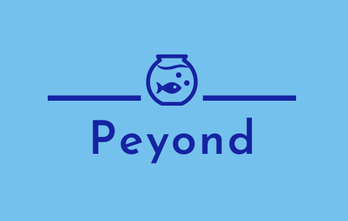

<ion-content scroll="false" class="welcome-container">
    <ion-slides #theSlides>
        <ion-slide>
            <div>
                <h3
                    style="text-align: left; margin-bottom: 40px;margin-left: 40px;margin-top: 100px; font-weight: 300"
                >
                    Welcome to
                </h3>
                
                <p style="font-weight: 100; font-size: 20px">
                    Peyond your HABITS
                </p>
                <p style="margin-top: 250px;">
                    The Penguins need your help. <br />
                    Swipe left to get started!
                </p>
            </div>
        </ion-slide>

        <ion-slide>
            <div>
                <h2>Choose your Guide</h2>
                <ion-list>
                    <ion-item
                        lines="none"
                        style="padding:10px"
                        button
                        *ngFor="let penguin of penguins"
                        (click)="move(theSlides, 2, penguin.name)"
                    >
                        <ion-avatar class="penguin">
                            
                        </ion-avatar>
                        <ion-label
                            >{{ penguin.name }} <br />
                            {{ penguin.age }} yrs</ion-label
                        >
                    </ion-item>
                </ion-list>
            </div>
        </ion-slide>
        <ion-slide>
            <div class="penguin-speech">
                <div>
                    <h2>Hi I'm Franziska!</h2>
                    <p>
                        Thank you for choosing me :-)! <br />
                        I am 90 cm tall and weigh 10kg. <br />
                        I like eating and teasing my<br />
                        brother Ferdinand. <br />
                        I will guide you through the <br />
                        challenges and keep you updated <br />
                        about events from the zoo!
                    </p>
                    <ion-button routerLink="/challenges"
                        >Let's start with a challenge</ion-button
                    >
                </div>
            </div>
        </ion-slide>
    </ion-slides>
</ion-content>

<!-- <ion-content fullscreen padding scroll-y="true">
      
    </ion-content> -->
